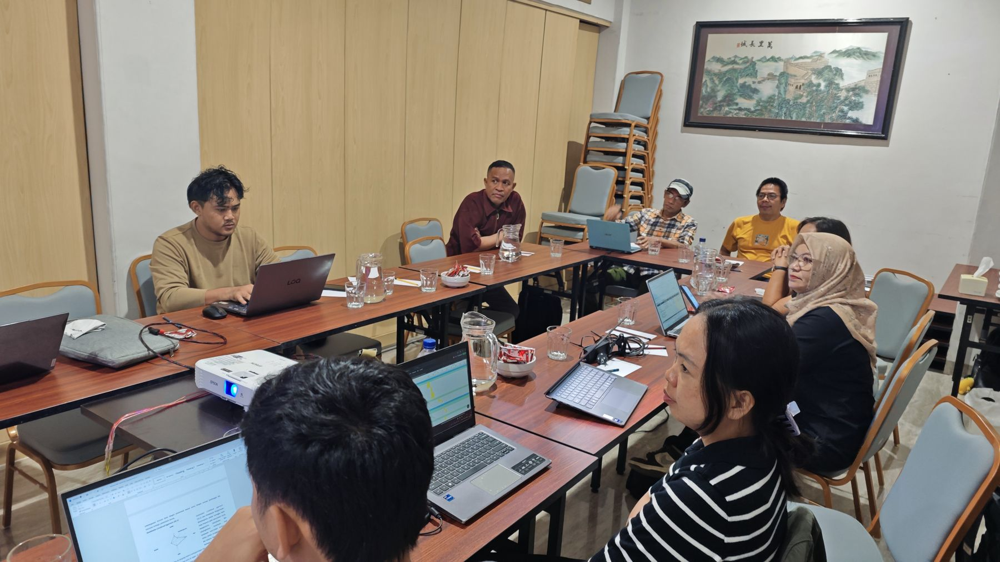
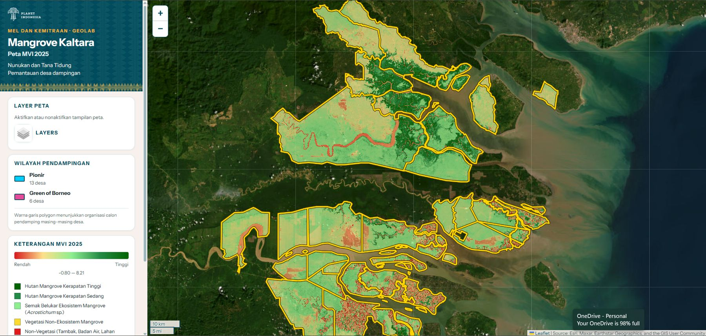
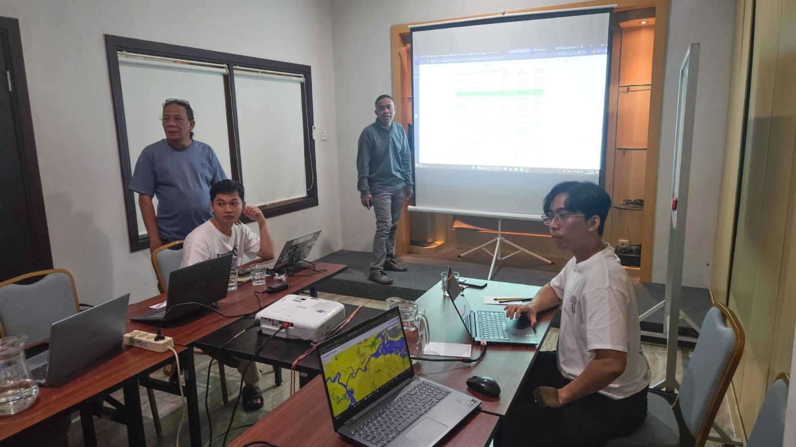
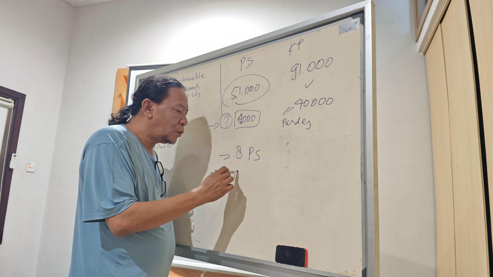
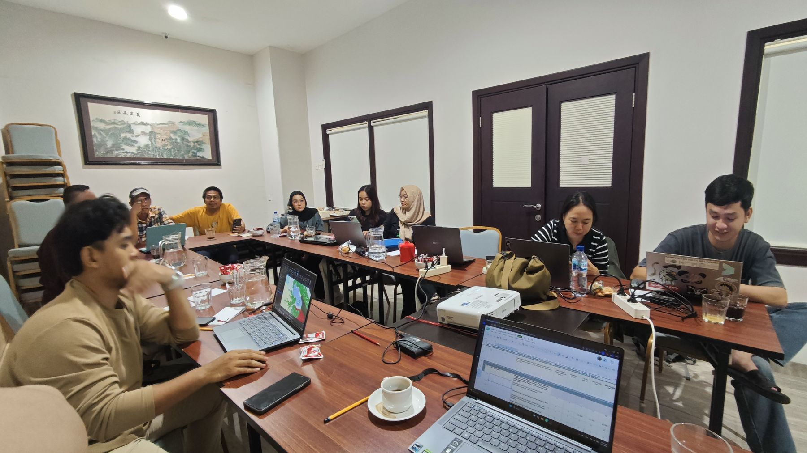
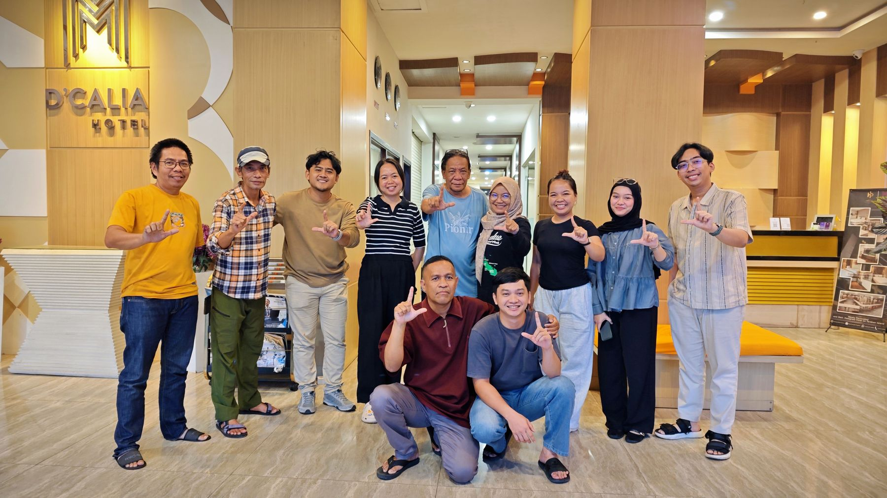

Back to Office Report · PSHIP009
YPI bersama Yayasan Pionir dan Perkumpulan Green of Borneo · Hibah Waverly Street Foundation 2026–2029
↓ Unduh presentasi (PPTX)
Ringkasan kegiatan
YPI, Yayasan Pionir, dan Green of Borneo (GoB)
Luas kawasan indikatif di Nunukan dan Tana Tidung
Akan dinilai sebelum desa pelaksanaan ditetapkan
2 fasilitator YPI, 4 Pionir, 3 GoB
Nomor TOR
PSHIP009
Penanggung jawab
Pramudya Lazuardi
Lokasi
Kota Tarakan, Kalimantan Utara
Waktu
4–5 November 2026 (perjalanan 3 dan 6 November)
Kerangka hibah
Waverly Street Foundation, 9 Nov 2026 – 31 Okt 2029

Latar belakang
Istilah kunci
Kerangka hasil, indikator, target tahunan, dan cara membuktikan capaian.
Dokumen atau data yang membuktikan capaian.
Kebutuhan koordinasi, pembelajaran, dan penguatan kelembagaan, bukan sekadar daftar kegiatan lapangan.
Tujuan dan hasil yang diharapkan
Tujuan
Menyusun dan menyepakati logframe bersama serta logframe tiap lembaga untuk 2026–2029.
Hasil yang diharapkan
Hasil, indikator, target tahunan, data awal, metode pemantauan, MoV, dan pembagian tanggung jawab.
Tujuan
Mengatur jalur koordinasi, validasi data, pelaporan, informasi sensitif, dan persetujuan publikasi.
Hasil yang diharapkan
Penanggung jawab, jadwal koordinasi, pemeriksaan data dan laporan, serta alur persetujuan publikasi.
Tujuan
Menyusun langkah penguatan kemitraan sesuai kebutuhan teknis, MEL, dan kelembagaan tiap mitra.
Hasil yang diharapkan
Kegiatan prioritas Nov 2026 – Okt 2027 dengan penanggung jawab, jadwal, dukungan, dan bukti selesai.
Bagian 2
Logframe dan anggaran mitra, mekanisme koordinasi awal, dan rencana tindak lanjut Tahun 1.

Hasil 1
MoV
Hasil 2
Memperbarui data perkembangan kegiatan dan MoV setiap bulan.
Mengonsolidasikan data untuk pemantauan program.
Disusun YPI dari data gabungan ketiga lembaga.
Peninjauan kemajuan bersama setiap tiga bulan
MoV: RTL Bersama Y1
Hasil 3
Nov 2026 – Jan 2027
Metode disiapkan, lalu penilaian awal calon lokasi program.
Feb – Mar 2027
Hasil asesmen dibahas bersama pemerintah dan pihak terkait.
Mar – Okt 2027
Sosial-ekonomi rumah tangga, tutupan dan karbon mangrove, perikanan, dan tata kelola lembaga lokal.
Jun – Okt 2027
Pelatihan MEL dan SMART Patrol bagi GoB, lalu rencana kerja per desa.
Peran: YPI memimpin metode pengukuran dan pemeriksaan mutu data; mitra mendukung pengumpulan data lapangan; YPI memantau berkala dan menggabungkan laporan tahunan.

Rencana tindak lanjut Tahun 1

Peserta dan fasilitator
Pramudya LazuardiScaling & Partnership Manager
Dhyar Prayoga RudiantoMEL Partnership Supervisor
Doni TiakaDirektur Utama
Dede WahyudiProgram
Uria Ema Julia AjanProject Manager
Noni Margawari LuhatGIS
KamirudinDirektur
MasruniProgram Manager
SahariMEL & GIS
Nama peserta mitra merujuk pada daftar penerima pengganti HOK dan transportasi. Daftar hadir bertanda tangan perlu dilampirkan sebagai bukti kehadiran formal.
Realisasi jadwal
Perjalanan menuju Tarakan dan persiapan teknis pertemuan.
Pengantar pengukuran outcome, pembahasan logframe program dan tiap lembaga, serta mentoring perencanaan.
Lanjutan logframe, anggaran, dan RTL. Pendampingan GoB juga berlangsung di luar sesi formal.
Perjalanan kembali dari Tarakan.
Catatan tindak lanjut
Luas kawasan tanpa tumpang tindih dan data awal sebagai acuan final.
Selaraskan 12 desa calon, 6 desa logframe sumber, dan survei 8 desa.
Konfirmasi tenggat laporan tahunan dari perjanjian hibah WSF.
Lanjutkan pendampingan standar biaya, pencatatan, dan laporan keuangan.
Lengkapi validasi data, informasi sensitif, dan persetujuan publikasi.
Lampirkan daftar hadir bertanda tangan dan arsip bukti keuangan.

Terima kasih
Lampiran: logframe dan anggaran tiap mitra, logframe bersama WSF, RTL Bersama Y1, dokumentasi foto, dan arsip bukti keuangan.
Kontak: Tim Penskalaan dan Kemitraan, Yayasan Planet Indonesia
↓ Unduh presentasi (PPTX)